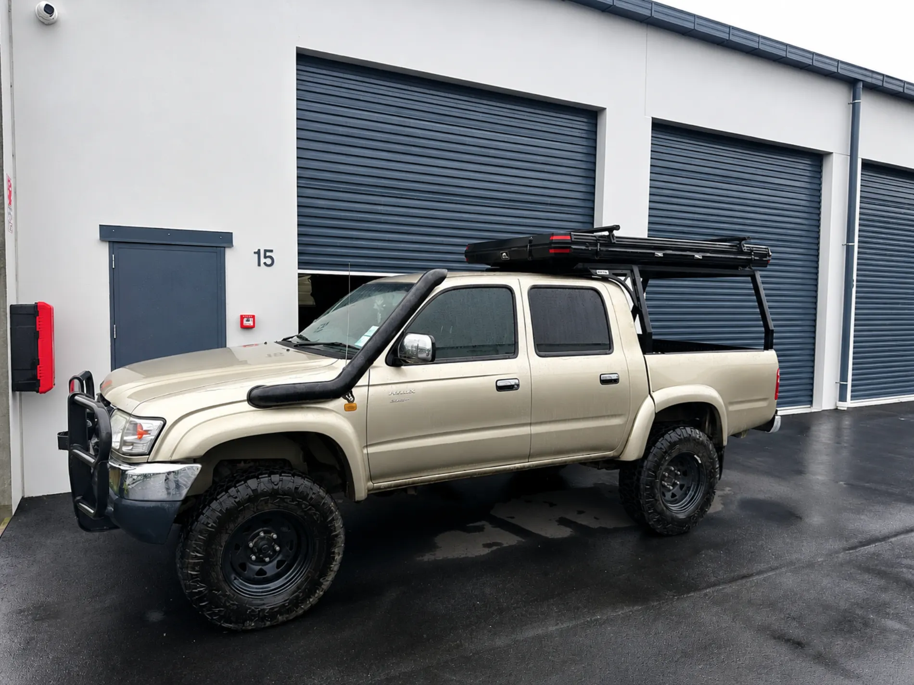
01
Automotive Window Tinting
3M films fitted to cars, utes and vans. Cut glare and heat, add privacy, and get a clean, bubble-free finish that lasts.
3M window films and precision upholstery for cars, boats, homes and commercial fit-outs. A tidy finish, fair pricing and a fast turnaround, every job.
★★★★★ Trusted by Christchurch drivers & boatiesTwo generations of upholstery craft and precise film work, from your daily driver to a full commercial fit-out. Here's the core of what we take on.

3M films fitted to cars, utes and vans. Cut glare and heat, add privacy, and get a clean, bubble-free finish that lasts.
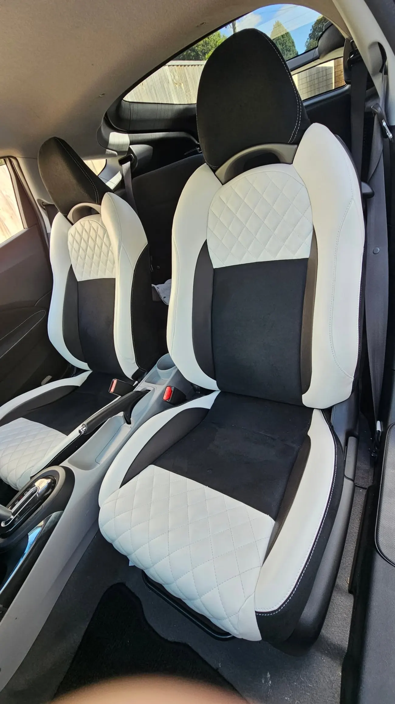
Seats, headliners, door cards and full re-trims. Worn or torn interiors brought back to a factory-tidy standard.
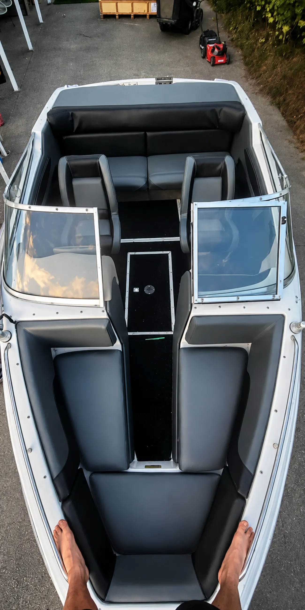
Boat squabs, seating and covers made and repaired to handle the water. Hard-wearing, weather-ready and neat.
Lounge suites, chairs and dining seats reupholstered in the fabric or leather you choose. A second life for good furniture.
Window films for offices, shopfronts and houses: heat and UV control, glare reduction, privacy and safety film.
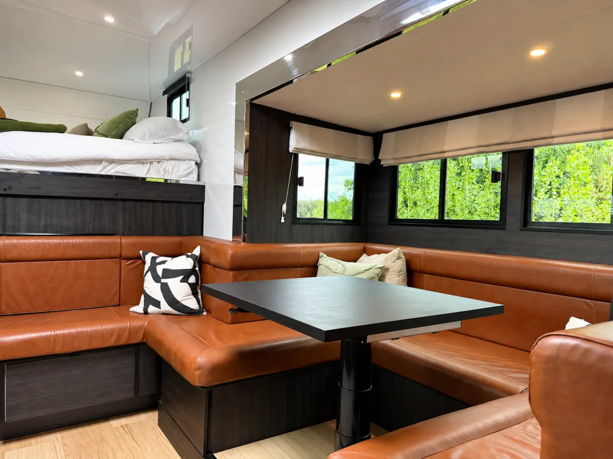
Tinting for everything from four wheels to heavy trucks, campervans and machinery, sized and fitted to suit.
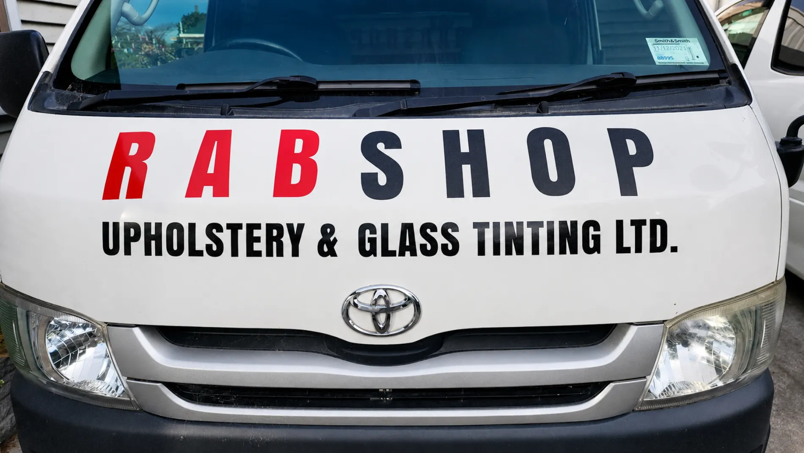
Christchurch owned & runRabshop Upholstery and Glass Tinting was established in 2019 and is led by a second-generation upholsterer with more than twenty years at the trade, plus years fitting film and upholstery here in New Zealand.
We cover the lot: auto, marine, domestic and commercial upholstery, and window films for vehicles and buildings. Efficiency and a quick, tidy turnaround are what we're known for.
Real jobs from the Islington workshop: full re-trims, custom stitching, headliners and classic restorations.
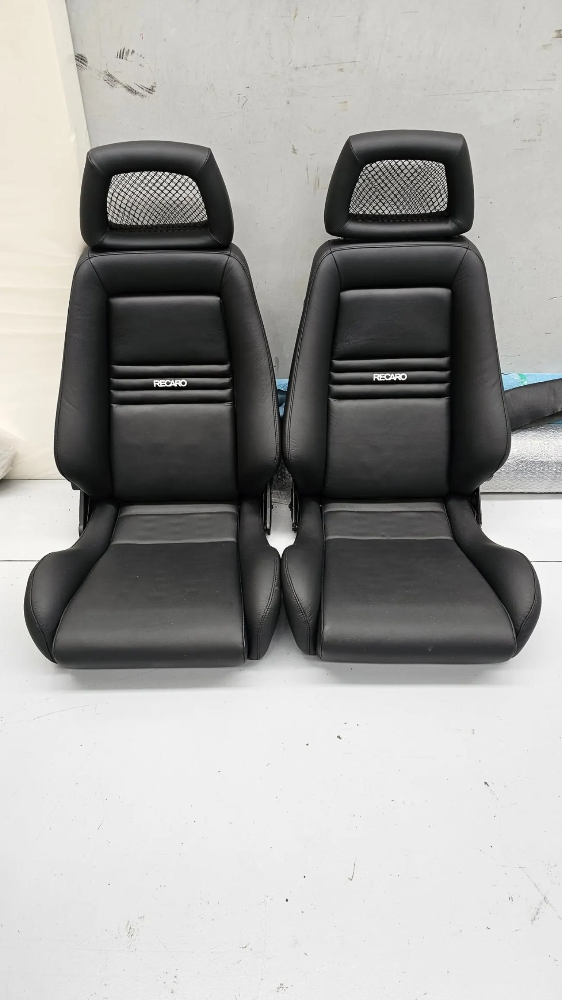
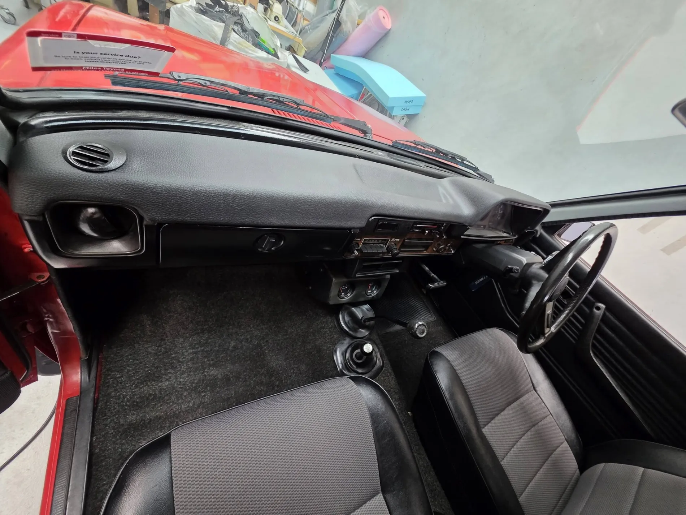
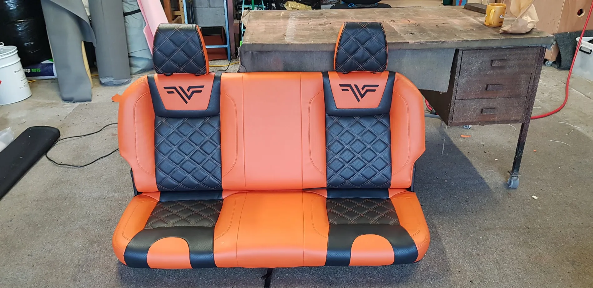
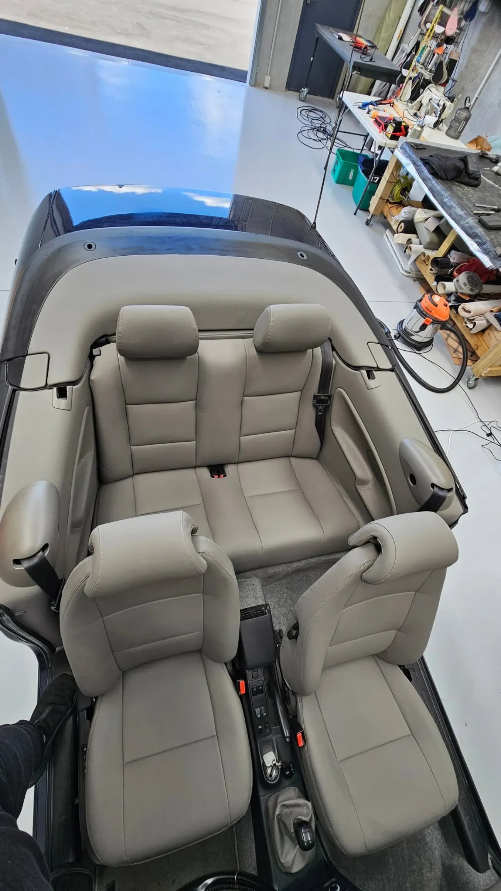
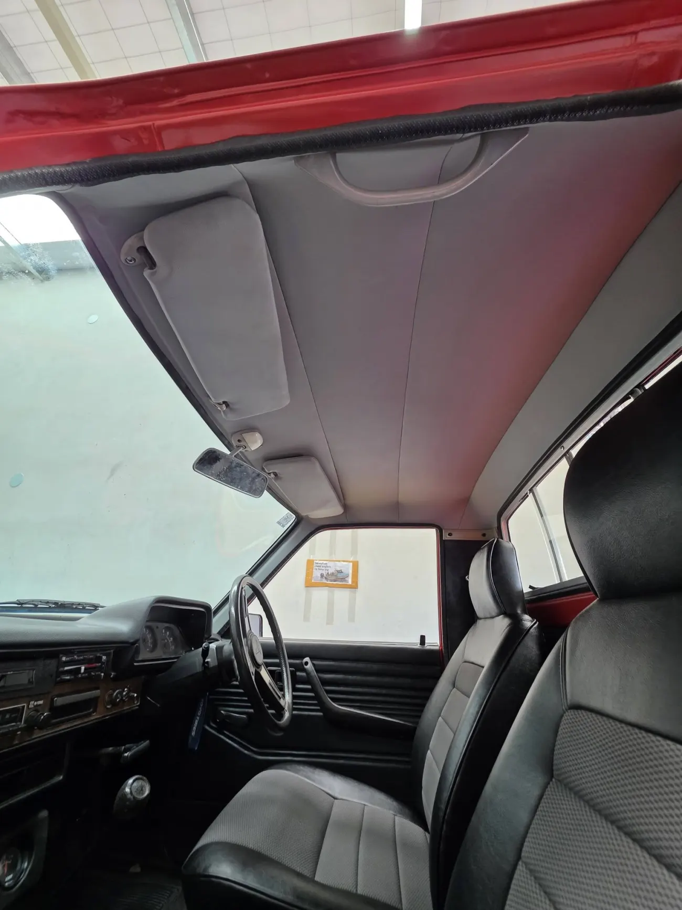
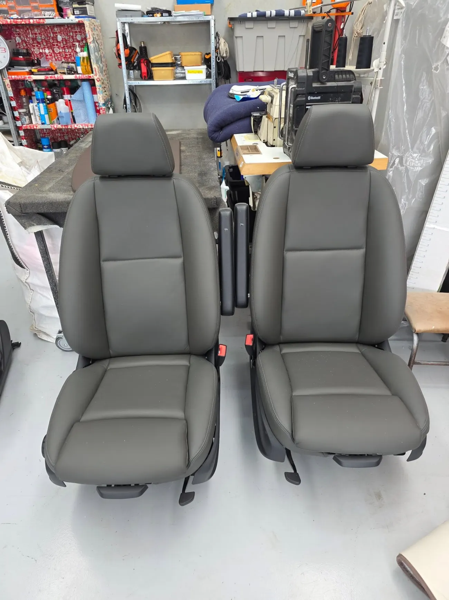
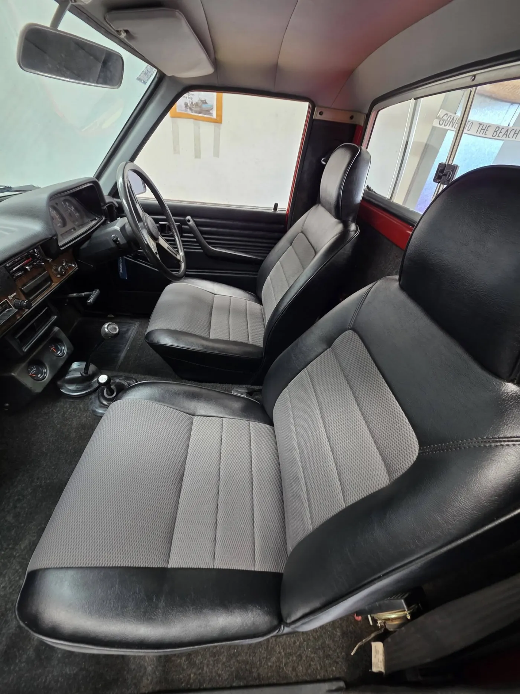
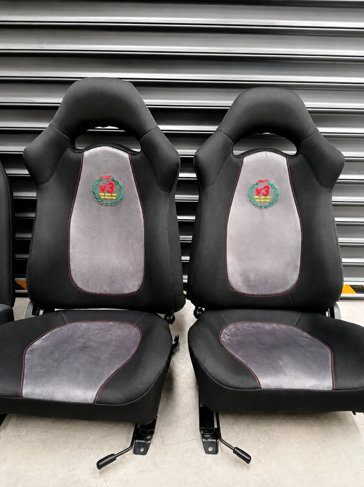
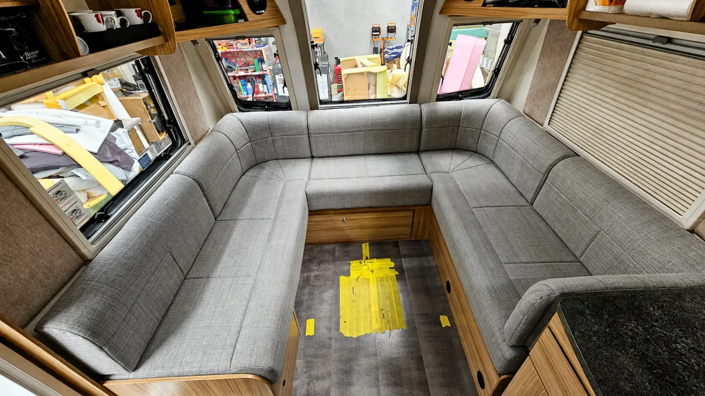
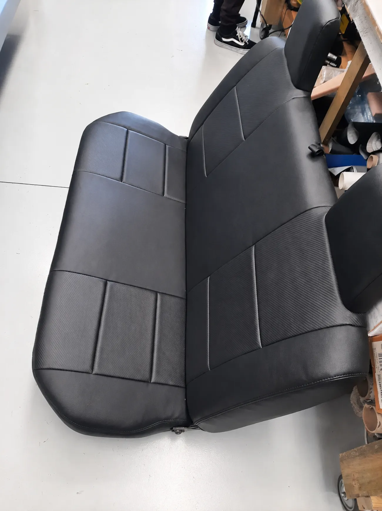
The hands behind every re-trim and every film. Small team, direct dealing. You talk to the people doing the work.
Second-generation upholsterer with 20+ years at the trade. Sets the standard on every job that leaves the shop.
Your first point of contact for pricing and bookings. He tells you straight what a job needs and when it'll be done.
The team on the tools, cutting film, stitching trim and fitting covers to a clean, careful finish.
"Got the whole car tinted and it looks factory. Booked me in quick, done the same day and the finish is spotless. Won't go anywhere else."
"Reupholstered our old lounge suite and it's like a brand new couch. Great fabric choice, tidy stitching and fair price. Really happy."
"Did the squabs and covers on my boat. Hard-wearing, neat job and turned around fast before the season. Top blokes to deal with."
The things people ask John most. Anything else, just give us a call.
Call 027 281 5505Cars, utes and vans, boats, campervans, trucks and heavy gear, plus home and commercial windows and furniture. Tinting and upholstery are both done in the one Islington workshop.
Genuine 3M window films, fitted for a clean, bubble-free finish that cuts glare and heat and adds privacy.
Yes. We repair and re-trim seats, headliners and door cards, right through to full interior re-trims, and bring tired interiors back to a factory-tidy standard.
We do. Boat squabs, seating and covers, made or repaired to handle the water and the weather.
Yes: lounge suites, chairs and dining seats, reupholstered in the fabric or leather you choose.
Call John on 027 281 5505, or email with the vehicle or item and what you're after (tinting, a re-trim, covers). We aim to reply the same working day.
We work Monday to Friday by appointment, so give us a call first and we'll book a time that suits.
Unit 15, 36B Islington Avenue, Islington, Christchurch. There's a map at the bottom of this page.
Call John for a straight price, or send the details through and we'll come back to you. No forms, no fuss.
Tell us the vehicle or item and what you're after (tinting, a re-trim, covers) and we'll sort a price.
Call 027 281 5505 Email us about your jobWe aim to reply the same working day.